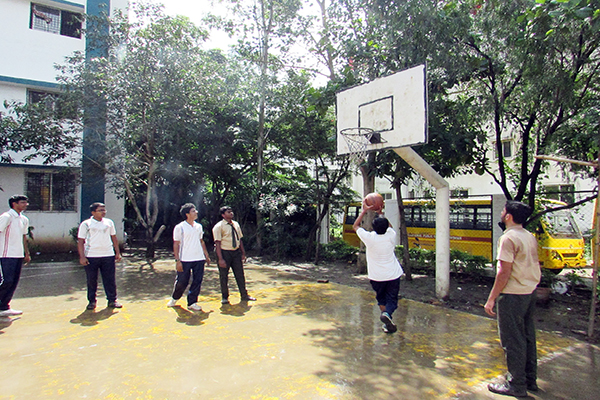
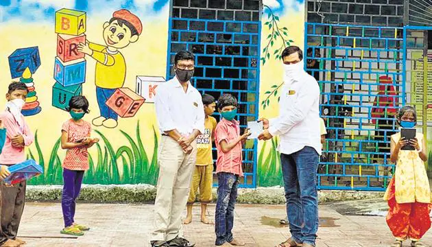

Z P High School Madanapalle
Near RTC Bus Stand Madanapalle,Chittoor(Dist),Pin:517325
ABOUT
FECILITIES
CONTACT US
SPORTS
Sports are a crucial part of a student's growth and development. They help in the development of mental health and physical fitness of the body. Through participation in sports and games, a student gains various skills, experience and confidence that are helpful for developing their personality.
port pertains to any form of competitive physical activity or game[1] that aims to use, maintain or improve physical ability and skills while providing enjoyment to participants and, in some cases, entertainment to spectators.[2] Sports can, through casual or organized participation, improve one's physical health. Hundreds of sports exist, from those between single contestants, through to those with hundreds of simultaneous participants, either in teams or competing as individuals. In certain sports such as racing, many contestants may compete, simultaneously or consecutively, with one winner; in others, the contest (a match) is between two sides, each attempting to exceed the other. Some sports allow a "tie" or "draw", in which there is no single winner; others provide tie-breaking methods to ensure one winner and one loser. A number of contests may be arranged in a tournament producing a champion. Many sports leagues make an annual champion by arranging games in a regular sports season, followed in some cases by playoffs.
Sport is generally recognised as system of activities based in physical athleticism or physical dexterity, with major competitions such as the Olympic Games admitting only sports meeting this definition.[3] Other organisations, such as the Council of Europe, preclude activities without a physical element from classification as sports.[2] However, a number of competitive, but non-physical, activities claim recognition as mind sports. The International Olympic Committee (through ARISF) recognises both chess and bridge as bona fide sports, and SportAccord, the international sports federation association, recognises five non-physical sports: bridge, chess, draughts (checkers), Go and xiangqi,[4][5] and limits the number of mind games which can be admitted as sports.[1]
Sport is usually governed by a set of rules or customs, which serve to ensure fair competition, and allow consistent adjudication of the winner. Winning can be determined by physical events such as scoring goals or crossing a line first. It can also be determined by judges who are scoring elements of the sporting performance, including objective or subjective measures such as technical performance or artistic impression.
Records of performance are often kept, and for popular sports, this information may be widely announced or reported in sport news. Sport is also a major source of entertainment for non-participants, with spectator sport drawing large crowds to sport venues, and reaching wider audiences through broadcasting. Sport betting is in some cases severely regulated, and in some cases is central to the sport.
According to A.T. Kearney, a consultancy, the global sporting industry is worth up to $620 billion as of 2013.[6] The world's most accessible and practised sport is running, while association football is the most popular spectator sport.[7]
List of SPORTS
- Foot football
- Wally ball
- Circket
- Tennies
- Kabadi
- RUNNING race
- Settle
- Ball batmenton
- Ball batmenton
- Ball batmenton


**This web page is created by MAHESH GOPATHI**